El periodo de la historia de la música predominante en el siglo XIX, comúnmente llamado Romanticismo, culminó con los dramas musicales de Richard Wagner, en los que todos los elementos de la obra estaban detalladamente estudiados por el compositor. A este concepto lo llamaba Gesamtkunstwerk («obra de arte total»1), ya que creía poseer la responsabilidad de reunir todas las artes en una misma obra. Wagner se aseguraba personalmente de que en sus óperas las artes escénicas, musicales, poéticas y visuales se combinaran entre sí a la perfección.
La idea del Gesamtkunstwerk la desarrolló alrededor de 1850, y la plasmó en su totalidad en su ciclo de cuatro óperas Der Ring des Nibelungen, estrenado el 16 de agosto de 1876. Wagner controló y creó cada aspecto de la tetralogía, desde la música hasta el libreto, el vestuario y la escenografía. Incluso mandó crear su propia sala de conciertos en Bayreuth, el Festspielhaus, para que el escenario se adecuara a sus ideas sobre el pensamiento y la cultura musical.
Así, a ojos de compositores posteriores, Wagner había agotado todas las posibilidades de la música tonal, y quizás ya había comenzado el viraje hacia el predominio de la disonancia con su abundante uso del cromatismo, como en el famoso primer acorde del drama musical Tristan und Isolde (1865). Consta de las notas Fa, Si, Re# y Sol#, y sus intervalos desde el Fa son una cuarta aumentada, una sexta aumentada y una novena aumentada.
Siguiendo la concepción del progreso como un camino ascendente, el paso siguiente para la composición musical debía consistir en deshacerse progresivamente de la tonalidad y desarrollar la «emancipación de la disonancia»2. Así fue como Arnold Schoenberg ideó sus teorías del pensamiento musical, y éstas dieron paso a la creación de la atonalidad. [1]
De esta época es su primera obra importante, Verklärte Nacht («Noche transfigurada»), Op. 4. Compuesto en 1899, este sexteto de cuerdas está inspirado por el poema homónimo de Richard Dehmel. La música, según su autor, expresa el paseo de un hombre y una mujer en medio del abrazo de la naturaleza. Aunque en la obra aún prevalece la armonía tradicional basada en acordes, Schoenberg sitúa al oyente en un terreno de indefinición tonal, no sólo en el plano armónico sino también en el melódico. Además, hace uso del acorde de novena invertido, inexistente hasta entonces y, por tanto, rechazado por la crítica. [2]
Tras pasar por la etapa tonal posromántica, y debido a su convicción en la irrevocabilidad de la evolución de la música hacia el cromatismo total [3], en 1908 Schoenberg se desligó de la tonalidad completamente con el ciclo de canciones Das Buch der Hängenden Gärten. A partir de entonces se dedicó a componer fragmentos muy breves cuya estructura era definida por motivos y no por la armonía, como solía ocurrir en formas musicales anteriores3. A este periodo en sus composiciones se le llama atonalidad libre, aunque cabe destacar que Schoenberg rechazaba fervientemente este término:
La expresión “música atonal” es de lo más desafortunada - es como llamar a volar “el arte de no caer” o nadar “el arte de no ahogarse”.4
A este periodo - es de 1912 - pertenece también su famoso ciclo de canciones Pierrot Lunaire, Op. 21. Su nombre completo es “Tres veces siete poemas de Pierrot Lunaire de Albert Giraud”, ya que está dividida en 3 grupos de 7 canciones cada uno, cuyos textos son una selección de 21 poemas del ciclo homónimo de Albert Giraud.
Se encuentran en ella abundantes referencias al número 7: Schoenberg hace un uso extensivo de motivos de 7 notas a lo largo de la obra, mientras que el conjunto musical que la interpreta, incluyendo al director, consta de 7 miembros. De hecho, a este conjunto de instrumentos - flauta, clarinete, violín, violonchelo, piano y cantante - se le ha dado el nombre de ensemble Pierrot en su honor.
Otros números importantes en la obra son el 3 y el 13. Cada poema consta de 13 líneas, mientras que la primera línea de cada poema aparece 3 veces: en las líneas 1, 7 y 13.
En esta obra no sólo hay una ausencia total de relaciones tonales, sino que el tratamiento vocal evita también cualquier relación estética con las técnicas tradicionales: es un Sprechgesang, un canto hablado. De hecho, Schoenberg se refiere a estas piezas no como canciones, sino como melodramas. [2]
Además, por aquella época sufrió una crisis en muchos aspectos de su vida. En lo personal, su mujer Matilde Zemlinsky acababa de abandonarlo por otro hombre, aunque posteriormente volvería junto al compositor. Y, en lo profesional, sus obras no eran del gusto del público, por lo que no contaba con suficiente dinero para mantener a su familia. Todas estas circunstancias, unidas al desarrollo de la Primera Guerra Mundial, no le permitieron componer apenas entre 1914 y 1923.
Tras el final de la guerra, en 1919, Schoenberg fundó la Sociedad para Interpretaciones Musicales Privadas junto a sus discípulos y amigos Alban Berg y Anton Webern. Schoenberg, Berg y Webern se autodenominaron la Segunda Escuela de Viena en honor al grupo de compositores del siglo XVIII Haydn, Mozart y Beethoven, quienes formaban la Primera Escuela de Viena.
En la Sociedad para Interpretaciones Musicales Privadas se presentaban músicas contemporáneas en circunstancias que favorecieran su adecuada apreciación. Así se evitaba que dichas obras, al no ser entendidas por el público, fueran inmediatamente rechazadas. Las obras de compositores como Mahler, Debussy, Bartók, Ravel, Strauss y Stravinsky fueron incluidas en los programas de conciertos organizados por la Sociedad.
En este contexto Schoenberg pudo reflexionar sobre sus técnicas compositivas, y al fin publicó en 1923 su ensayo Método de composición con doce sonidos, donde se describían por primera vez los axiomas del dodecafonismo: la solución al problema de la atonalidad libre que le había estado atormentando durante una década.
Su primera obra íntegramente dodecafónica, publicada también en 1923, es la Suite para piano Op. 25. Es la pieza más temprana en la que Schoenberg usa series dodecafónicas en cada uno de los movimientos. En dos obras anteriores a ella usa series dodecafónicas, pero en movimientos aislados: la Op. 23, 5 Stücke (1920-23), en el movimiento de Waltz final; y su Serenata, Op. 24, en su Soneto central.
Las series utilizadas en la Suite Op. 25 servirán de ejemplo en este texto, y su tercer movimiento, Musette, será estudiado y analizado en el apartado  con el fin de entender una obra dodecafónica en toda su extensión.
con el fin de entender una obra dodecafónica en toda su extensión.
El resto de elementos de la pieza, como el número de instrumentos, el ritmo, el carácter, la textura o las dinámicas, se dejan a discreción del compositor. No serializar todos los conjuntos será la principal crítica al dodecafonismo por parte de los compositores serialistas que sucedieron a su creador, Arnold Schoenberg. Para los serialistas integrales, como Pierre Boulez, aquello restaba cohesión al modelo compositivo; para los dodecafonistas, aportaba libertad. [4]
Precisamente la predeterminación dodecafónica, aunque parece limitante, permite realizaciones musicales y estilos de composición muy diferentes: Schoenberg daba un tratamiento tradicional a sus obras, ya que aún admiraba las formas clásicas; Alban Berg iba más allá al utilizar series que recordaban a las tríadas tonales; y, en cambio, Anton Webern evitaba radicalmente cualquier asociación con la tradición. [3]
Schoenberg definió su sistema musical a partir de cuatro postulados que, en realidad, se basan en principios matemáticos [5]:
1. La serie [sobre la que se construye la obra dodecafónica] consta de las doce notas de la escala cromática dispuestas en un orden lineal específico.
2. Ninguna nota aparece más de una vez en la serie.
Los dos primeros postulados expresan que una obra dodecafónica fundamenta su estructura sobre una permutación de la escala de doce semitonos. Dicha permutación 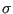 es una biyección del conjunto numerado de las doce notas {Do = 0, Do# = 1, Re = 2, Re# = 3, Mi = 4, Fa = 5, F# = 6, Sol = 7, Sol# = 8, La = 9, La# = 10, Si = 11} consigo mismo, y se representa de esta forma:
&sigma#sigma;(0),&sigma#sigma;(1),&sigma#sigma;(2),&sigma#sigma;(3),&sigma#sigma;(4),&sigma#sigma;(5),&sigma#sigma;(6),&sigma#sigma;(7),&sigma#sigma;(8),&sigma#sigma;(9),&sigma#sigma;(10),&sigma#sigma;(11)
La permutación 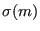, con 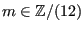5, pertenece al grupo simétrico de orden 12: 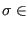 S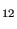. Por ejemplo, en la Suite para piano Op. 25 Schoenberg utiliza como serie original en todos los movimientos de la obra la siguiente permutación :

3. La serie será expuesta en cualquiera de sus aspectos lineales: original, inversión, retrogradación de la original y retrogradación de la inversión.
4. La serie puede usarse en sus cuatro aspectos desde cualquier nota de la escala.
Los dos últimos postulados amplían los recursos compositivos al admitir la transformación de la serie original mediante inversión, retrogradación, inversión retrógrada y transposición6. El compositor puede utilizar cualquiera de las transformaciones de una serie al componer su obra dodecafónica. El conjunto de series que puede utilizar, que viene dado por la serie original y todas sus posibles transformaciones, se conoce como espectro serial. [5]
La serie transportada k semitonos (con k constante),
T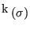, se construye sumando k a (mod. 12):
A su vez, T 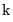 se forma al componer k transposiciones de 1 semitono: T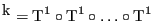, k veces. Debido a que k es en realidad el exponente en la potencia de T, se coloca este número como superíndice.
Una posible serie transportada sobre la permutación de la Suite para piano Op. 25, con k 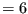, es la siguiente serie T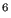:
La serie retrógrada se construye de esta forma:
La serie retrógrada sobre la permutación de la Suite Op. 25 es la siguiente serie R:

| I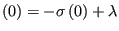 | 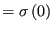 | |
| 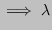 | 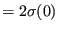 |
La serie invertida sobre la permutación de la Suite Op. 25 es la siguiente serie I:
En total, obtendremos 48 series - aunque no obligatoriamente distintas entre sí - pertenecientes a un solo espectro serial. Hay 12 series originales sobre cada una de las doce notas, 12 series retrógradas, 12 invertidas y 12 series sobre las que se aplica tanto la retrogradación como la inversión. A continuación se muestra la sintaxis simple junto a la matemática:
Sintaxis simple
T, T, T...
R, R, R...
I, I, I...
IR, IR, IR...
Sintaxis matemática
T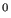, T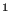, T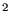...
R, RT, RT...
I, IT, IT...
IR, IRT, IRT...
Dada una serie, su matriz dodecafónica es una representación visual de su espectro serial; es decir, del conjunto de series derivadas de esa serie. El espectro serial es todo el material compositivo sonoro del que se dispone para la composición de una obra dodecafónica. Al poder ordenar y disponer la información en una tabla, el compositor puede acceder a toda ella al mismo tiempo sin tener que calcular cada serie individualmente.
La matriz se lee en la dirección en la que aparece el nombre de la serie. Las series T se leen de izquierda a derecha, mientras que las series R de derecha a izquierda. Las series I se leen de arriba a abajo y las IR/RI de abajo a arriba.
He creado un programa que devuelve en formato LATEX la matriz correspondiente a cualquier serie dodecafónica que se introduzca en teclado, además de producir la nomenclatura simple para cada serie. El código, escrito en C++, está incluido en el Anexo  , página
, página  .
.
A continuación, se incluye la matriz dodecafónica de la serie P de la Suite Op. 25 de Schoenberg. Mientras que la mayoría de tablas tienen dos filas inferiores, que se corresponden con las distintas nomenclaturas de RI e IR para una misma serie – ya que normalmente no conmutan –, en la matriz de la serie P sí coinciden .
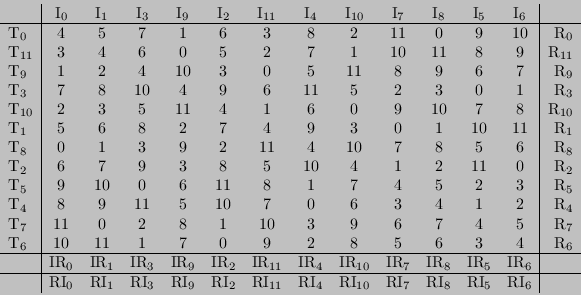
Por otro lado, he escrito otro programa en el propio lenguaje LATEX que crea esta misma tabla con el comando \dmatrix, y tiene cualquier serie como argumento: \dmatrix{4,5,7,1,6,3,8,2,11,0,9,10}. El código se encuentra en el Anexo  , página
, página  . La tabla aparece sin el orlado de nomenclaturas:
4,5,7,1,6,3,8,2,11,0,9,10
. La tabla aparece sin el orlado de nomenclaturas:
4,5,7,1,6,3,8,2,11,0,9,10
También he creado una página interactiva que genera matrices de cualquier serie para cualquier longitud serial, además de generar series aleatorias. Permite escoger entre dos numeraciones y dos nomenclaturas. Está escrita en Elm y el código puede encontrarse en https://gitlab.com/dodecafonismo/matrices.
En este enlace se encuentra la aplicación web. Sus instrucciones de uso se encuentran al final de la página: https://matrices.netlify.com/.
En la Suite para Piano Op. 25, Schoenberg escoge su serie para resaltar el intervalo de tritono (6 semitonos). A continuación se observan en negrita los intervalos entre las notas de esta serie, en unidad de semitono:
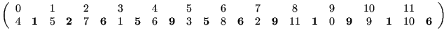
Presenta repeticiones triples de los intervalos de tritono (6), de sexta mayor (9) y de segunda menor o semitono (1): los intervalos más disonantes; una repetición doble de cuarta justa (5), y un intervalo de segunda mayor (2); además de una consecución de intervalos repetida: 9 - 1 - 9 - 1. Como se forma el intervalo de tritono al enlazar la serie original con una serie que empiece por la misma nota, se tiene en cuenta el intervalo de tritono (6) al final. En el dodecafonismo se evitan deliberadamente los intervalos de tercera mayor (4), ya que estos son la base de la eludida armonía tonal.
El intervalo de tritono tiene la particularidad de no modificarse en la inversión y transportación k = 6, por lo que estos intervalos aparecen en los lugares originales, mientras que en los procedimientos de retrogradación y retrogradación inversa ocupan sus lugares en retrógrado. En particular, Schoenberg utiliza entre los seis movimientos de la Suite solamente las ocho series de todo el espectro serial que cumplen estos requisitos: T, T, I, IT, R, RT, RI y RIT, que podemos observar en el Anexo  , página
, página  .
.
Estas series tienen muchos elementos en comun: todas comienzan o acaban por Mi o por Si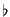, lo que permite enlazar unas series con otras por medio del unísono o del tritono; se mantienen los intervalos de tritono en sus lugares originales o retrógrados, y coinciden en las dos primeras y las dos últimas notas dos a dos.
Se han realizado estudios - como el de Martha Hyde [7] - en los que se limitan las series utilizadas en la Suite a cuatro: T, T, I e IT, pero ya que el objetivo de este texto no es analizar la obra entera se dejará esta cuestión para análisis posteriores.
Otro posible homenaje a Bach y sus contemporáneos barrocos es precisamente la forma de la obra: es una Suite, género cultivado durante los siglos XVII y XVIII que se compone de una variedad de danzas. La Suite de Schoenberg está formada por seis danzas: un Preludio, una Gavota, una Musette, un Intermezzo - que no tiene influencia barroca sino más bien de Brahms, otro modelo para Schoenberg -, un Minueto con Trío y una Giga. Además, el estilo, la textura - contrapuntística, típicamente barroca - y la estructura de cada danza se corresponden con los estilos, texturas y estructuras de las danzas homónimas del periodo bachiano.
Por ser ésta su primera obra totalmente dodecafónica, Schoenberg la utilizó como una muestra al mundo de las posibilidades de su nuevo método compositivo. Fue también por lo que tomó un formato tan variado como una Suite: así podía en una misma obra componer con estilos tan distintos como los de las distintas danzas.
Al componer la obra, Schoenberg trata cada tetracordio como una subunidad individual. Los superpone contra otras series del espectro también divididas, o utiliza sus notas como un solo acorde cuatríada. Estas divisiones no sólo sirven para hacer la serie más reconocible o añadir cohesión a la obra, sino que además facilitan el desarrollo de la serie específicamente en el estilo de cada danza.
A partir de la doble barra del compás 9, el Re (nota 1) acompaña a Sol y ambos crean un doble bordón en la mano izquierda. La elección de esas dos notas está estrechamente relacionada con la tradicional relación de quinta justa formada por Sol y Re en la música tonal. Schoenberg sustituye las quintas justas tonales por los tritonos dodecafónicos, subrayando aún más su «emancipación de la disonancia».
Además de las similitudes texturales, rítmicas y armónicas, la Musette de Schoenberg comparte estructura formal con las danzas barrocas. Y esta semejanza es quizás la más notable, ya que fue la búsqueda de estructura formal lo que inspiró a Schoenberg a desarrollar su método compositivo. La Musette barroca, como todos los movimientos de danza, presenta una estructura binaria con simetría tonal: empieza y acaba por la misma tonalidad, mientras que el centro es zona de desarrollo. Schoenberg despoja de funcionalidad tonal a esa simetría, madre de la forma sonata, y la aplica a su composición dodecafónica.
En este movimiento se pueden diferenciar a simple vista tres secciones, divididas en los compases 9 y 20, debido a cambios de textura, figuración y tempo. En la segunda sección se le añade melodía a la mano izquierda del piano, dejando más camuflado el bordón que en la primera sección, además de que éste se vuelve doble, mientras que vuelve a aparecer claramente en la tercera sección. También en la segunda sección aparece una nueva figuración, que es la semicorchea; y, por último, en los dos compases de división aparecen dos a tempo, que marcan el final de las dos primeras secciones tras dos zonas de variabilidad rítmica. [9]
Para que esta estructura tríptica sea una forma binaria, la primera y la última parte deben mantener un parecido, que se observa a través del análisis de las series utilizadas en el movimiento. Estas series son T, T, I e IT.
En la Musette, Schoenberg hace un uso casi absoluto de la tripartición serial, hasta el punto de individualizar los tetracordios por separado y concederles privilegios seriales, como la retrogradación. Por ejemplo, en el compás 7, en la voz inferior de la mano derecha aparece el tetracordio 4 - 5 - 2 - 3, que es o bien el primer tetracordio de RIT o la retrogradación del tercer tetracordio de IT, mientras que los otros dos tetracordios de IT, 10 - 9 - 78 - 1 en la voz superior y 8 - 11 - 6 - 0 en la mano izquierda, aparecen en el orden correcto. Entonces no se puede analizar el compás como RIT, sino indicar que hay una alteración puntual de IT.
Por tanto, es muy complicado analizar esta obra en su totalidad, ya que la flexibilidad en la ordenación de los tetracordios puede generar situaciones muy ambiguas. Debido a estas fragmentaciones y a las variadas combinaciones de tetracordios originales y retrógrados, se escucha un área de desarrollo hacia la sección media del movimiento. En cambio, las series al principio y al final de la pieza se presentan casi íntegramente, como una exposición y reexposición. He aquí un vínculo con la simetría de las formas binarias tonales. [9]
Es más, incluso el orden de las series utilizadas en la primera y en la última sección coinciden, exceptuando dos repeticiones consecutivas y las series T finales, que actúan como una cadencia serial:
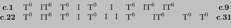
En el Anexo  , página
, página  , se encuentra el análisis serial completo de la Musette.
, se encuentra el análisis serial completo de la Musette.
Para definir un conjunto se puede o bien listar los objetos uno a uno, o bien describirlos por medio de un predicado: una o varias propiedades que caracterizan a todos los elementos de dicho conjunto.
Por ejemplo, el conjunto K , formado por las doce notas de la escala cromática de una misma octava i, está bien definido porque podemos hacer una lista con ellas: por ejemplo, K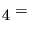
Do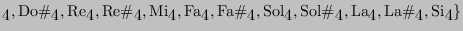
Por un lado, aun llamando a las notas de distinta manera, el conjunto, conceptualmente, es el mismo. Además, el hecho de listar algún elemento más de una vez no afecta a su definición. Como Do#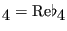,9 K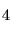 también puede ser listado así:
Do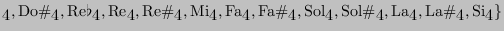
En cambio, el conjunto D, formado por las duraciones rítmicas elementales - sin ligaduras ni puntillos -, es infinito, por lo que no se puede listar de forma completa. Sin embargo, se puede expresar por medio de un predicado:
D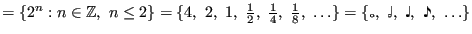
La notación 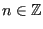 significa que 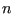 pertenece a los números enteros. En este caso se han representado las duraciones mediante su ratio con la duración de la negra .
Los elementos de un conjunto pueden combinarse mediante operaciones - como la suma o la multiplicación en el caso de los números - para dar otros objetos matemáticos.
Se dice que un conjunto G no vacío y una operación binaria () forman la estructura de un grupo (G, ) cuando cumplen:
( ) y ( ) son grupos, pero ( ) no porque no existe el inverso de 2 con la suma: . ( ) y ( ) son grupos, pero ( ) no porque no existe el inverso de 2 con la multiplicación: .
Todos los A tienen que estar asociados a un B, pero no todos los elementos de B tienen un elemento de A asociado. Los elementos de B que sí lo cumplen, es decir, los que se pueden escribir como para algún , forman el conjunto imagen de la función: B A
Cuando varias funciones se aplican una detrás de la otra decimos que realizamos la operación de composición de funciones. Se representa con el símbolo . La imagen de la primera función será el dominio de la segunda, y así sucesivamente. Por ejemplo, aplicar una función y después aplicar una función se denota .
Una permutación (X) es una función sobre un conjunto X que asocia sus elementos a los elementos del mismo conjunto X de manera unívoca. Es decir, asocia cada elemento a uno, y solo uno, de los elementos de su mismo conjunto ( X X).
El conjunto de todas las posibles permutaciones sobre un determinado conjunto X, junto con la operación de composición de funciones (), forma un grupo denotado por S . Para probarlo, se debe comprobar que cumple todas las propiedades de los grupos.
Cuando X es el conjunto de números naturales desde 1 hasta , el grupo S se representa como S y se le denomina el grupo simétrico de orden . El número de elementos en S, es decir, de posibles permutaciones de números, es .
En los ejemplos musicales de este texto, los conjuntos estarán numerados desde 0 hasta , siendo el número de elementos a permutar, en vez de desde 1 hasta . Seguirán siendo grupos simétricos de orden , pero con una numeración distinta.
La notación utilizada para representar una permutación perteneciente a S con la numeración desde 0 y con siendo el elemento asociado a mediante , es:
De esta forma se pueden operar entre sí los números del 0 al , ya que se conservan las operaciones de los números enteros, y si un resultado es se puede seguir dividiendo entre para que cumpla .
Se conserva la suma (y la resta), ya que si
 y
, entonces
, así que el resto de es igual al de .
y
, entonces
, así que el resto de es igual al de .
La aritmética modular también se llama aritmética del reloj, porque funciona de la misma manera que las horas en un reloj. Como el 3 tiene el mismo resto entre 12 que el 15, las 15h son las 3h: (mod. ). O, por ejemplo, 2 horas después de las 11 dan las 13, es decir, la 1: (mod. ).
También se conserva la multiplicación: si
 y
, entonces
, así que el resto de es igual al de .
y
, entonces
, así que el resto de es igual al de .
En música, la aritmética modular se puede encontrar en las escalas: todas las notas Do se toman como equivalentes, por ejemplo, y al sumarle 12 semitonos (una octava) se vuelve a obtener un Do. Si se asocian los números del 0 al 11 a las notas cromáticas del Do al Si, entonces (mod. ).